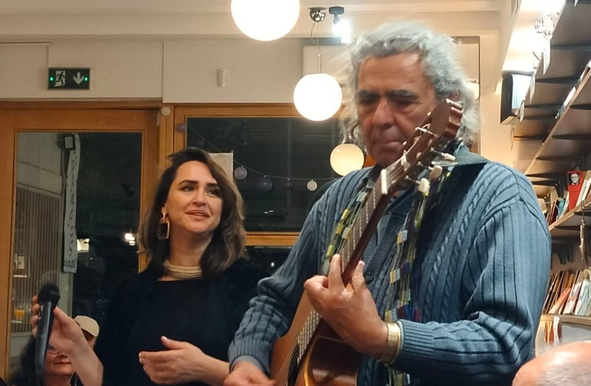

Κιθαρίστας & Συνθέτης
Ακουσε τη Μουσικη μουΚαλώς ορίσατε.
Είμαι ο Δημήτρης Ζαφειρέλης, επαγγελματίας κιθαρίστας με έδρα την Αθήνα και ένας από τους πρωτεργάτες της ελληνικής τζαζ σκηνής της μεταπολιτευτικής περιόδου.
Το ταξίδι μου ξεκίνησε τη δεκαετία του 1970. Έφηβος ακόμα, γεμάτος ανησυχίες —μουσικές και όχι μόνο— βρέθηκα μαζί με άλλους συνοδοιπόρους και συναδέλφους στην πρώτη γραμμή μιας συναρπαστικής εποχής. Μαζί, τολμήσαμε να πειραματιστούμε και να εδραιώσουμε ένα νέο, πρωτοποριακό για την εποχή είδος μουσικής· ένα κράμα διαφορετικών τάσεων και ρευμάτων που έμελλε να ανοίξει νέους δρόμους.
Από εκείνα τα πρώτα βήματα μέχρι σήμερα, είχα την τύχη να συνεργαστώ με σπουδαίους Έλληνες καλλιτέχνες και να παρουσιάσω τη δουλειά μου σε εμβληματικούς χώρους τέχνης, φεστιβάλ και τηλεοπτικές εκπομπές στην Ελλάδα και το εξωτερικό.
ΕΡΤ, Γαλλικό Ινστιτούτο, Ελληνοαμερικανική Ένωση, Βρετανικό Συμβούλιο, "Olympia" (Παρίσι), Στάδιο Ειρήνης και Φιλίας, Κέντρο Σύγχρονης Τέχνης "Ιλεάνα Τούντα", Σκιρώνειο Μουσείο, "Εύμαρος", Αετοπούλειο Πολιτιστικό Κέντρο Χαλανδρίου, ΔΕΠΑΚ Καλαμάτας.
"Μύλος" και "Υδρόγειος" (Θεσσαλονίκη), "Πρόβα Club" (Ιωάννινα), Jazzèt Cafè / Music Hall (Αθήνα), Βιβλιοκαφέ Εύμαρος (Αθήνα).
Φεστιβάλ Praxis, Ελληνικό Φεστιβάλ Jazz "Φ. Νάκας", Φεστιβάλ Jazz Θεσσαλονίκης & Κορίνθου, 1ο Διεθνές Φεστιβάλ Πάτρας, Rock Φεστιβάλ Πάτρας, Διεθνή Ethnic Φεστιβάλ Καβάλας & Χαλκιδικής, Πανελλήνια Έκθεση Βιβλίου, Hellexpo, καθώς και πολιτιστικές εκδηλώσεις του Πνευματικού Κέντρου του Δήμου Αθηναίων.

Fender Stratocaster (1979), Gibson Les Paul Standard, Kemper Profiler, Strymon Pedals.
| Κατηγορία | Έργα & Περιγραφή |
|---|---|
| Μελοποιημένη Ποίηση |
10 Κύκλοι Τραγουδιών Μελοποίηση πάνω σε έργα σύγχρονων ποιητών (Μαρία Λαϊνά, Πάγια Βεάκη, Κωστής Τριανταφύλλου, Edgar Allan Poe, Federico García Lorca, Πάτροκλος Λεβεντόπουλος, Αγάθη Ρεβύθη κ.α.). |
| Συμφωνικά & Μεγάλα Έργα |
Καθημερινή Ηλέκτρα Ηχογράφηση της σουίτας σε ποίηση Κωστή Τριανταφύλλου, γραμμένη για μικρή συμφωνική ορχήστρα, χορωδία και δύο γυναικείες φωνές. Αφροδίτη Όπερα Όπερα σε τρεις πράξεις, σε λιμπρέτο του Τάκη Φάβιου. |
| Θέατρο & Κινηματογράφος |
Ιουλιέτα Σύνθεση για τη θεατρική παράσταση της Βίλης Σωτηροπούλου (Θεατρική ομάδα "Μπουφόνοι"). Στόχο-Κόσμος Μουσική επένδυση σε σκηνοθεσία της Δήμητρας Αράπογλου. Αλιόσα Πρωτότυπες συνθέσεις και επένδυση βασισμένη στο τραγούδι "Ότσι Τσόρνια" για την ταινία του Θανάση Σκρουμπέλου. Ματωμένος Γάμος Σύνθεση και τραγούδια για το θεατρικό έργο του Φ. Γ. Λόρκα (σκηνοθεσία Β. Τραϊφόρου). |
| Solo Κιθάρα & Ορχήστρα |
Φυλλωσιές Rock Oriental Concert για κιθάρα και virtual ορχήστρα. Πρελούδια και Σκίτσα για Κιθάρα Συνθέσεις για Solo Κιθάρα. |
| Media & Ραδιόφωνο |
105,5 Στο Κόκκινο Σύνθεση του επίσημου ραδιοφωνικού σήματος του σταθμού. Αφροδίτης Σμίλη Instrumental έργο σε τρία μέρη. |




Παραδίδονται ιδιαίτερα μαθήματα (κλασικής, ακουστικής και ηλεκτρικής κιθάρας) για όλα τα επίπεδα. Μέσα από ένα εξατομικευμένο πρόγραμμα, εστιάζουμε στις δικές σου ανάγκες, είτε ξεκινάς τώρα το ταξίδι σου στη μουσική, είτε θέλεις να εμβαθύνεις σε προχωρημένες τεχνικές.
Ανάπτυξη σωστής τεχνικής (picking, legato, fingerstyle) πάνω σε κλασικό, rock, jazz και ethnic ρεπερτόριο, ανάλογα με το στυλ που σε εκφράζει.
Κατανόηση της αρμονίας, της θεωρίας της μουσικής και ανάπτυξη της δημιουργικότητας μέσα από τον τζαζ αυτοσχεδιασμό και τη σύνθεση.
Από αρχάριους που θέλουν να μάθουν τις πρώτες τους συγχορδίες, μέχρι προχωρημένους μουσικούς που προετοιμάζονται για επαγγελματική πορεία ή live εμφανίσεις.
Θέλεις να ξεκινήσεις; Κλείσε το πρώτο σου μάθημα γνωριμίας.
Επικοινώνησε ΤώραΤα μαθήματα παραδίδονται τόσο διά ζώσης (στο studio μου στην Αθήνα) όσο και online μέσω Zoom, Skype ή Teams. Η online διδασκαλία γίνεται με επαγγελματικό εξοπλισμό ήχου και εικόνας, ώστε η εμπειρία του μαθήματος να είναι εξίσου ποιοτική και άμεση.
Φυσικά! Τα μαθήματα είναι σχεδιασμένα για όλα τα επίπεδα. Αν είσαι εντελώς αρχάριος, θα ξεκινήσουμε από τα βασικά (σωστή στάση σώματος, βασικές συγχορδίες, απλό ρυθμό) με πολύ υπομονή και προσαρμοσμένο ρυθμό μάθησης στις δικές σου ανάγκες.
Για το πρώτο αναγνωριστικό μάθημα στο studio μου δεν είναι απαραίτητο, καθώς μπορώ να σου παρέχω εγώ κιθάρα. Ωστόσο, για την προσωπική σου μελέτη στο σπίτι, θα χρειαστεί να αποκτήσεις το δικό σου όργανο πολύ σύντομα. Μπορώ να σε βοηθήσω και να σε συμβουλεύσω στην αγορά της κατάλληλης κιθάρας ανάλογα με το budget σου.
Η συνήθης διάρκεια ενός μαθήματος είναι 60 λεπτά, ενώ η προτεινόμενη συχνότητα είναι μία φορά την εβδομάδα. Φυσικά, ανάλογα με τον ελεύθερο χρόνο σου και τους στόχους σου, μπορούμε να διαμορφώσουμε μαζί το ιδανικό πρόγραμμα μελέτης.
Όχι αποκλειστικά. Παρόλο που η Jazz, το Rock και ο αυτοσχεδιασμός είναι οι μεγάλες μου αγάπες, διδάσκω κλασική, ακουστική και ηλεκτρική κιθάρα καλύπτοντας ένα ευρύ φάσμα ρεπερτορίου (από pop και rock μέχρι blues και έντεχνο). Το μάθημα προσαρμόζεται πάντα στο στυλ που αρέσει σε εσένα!